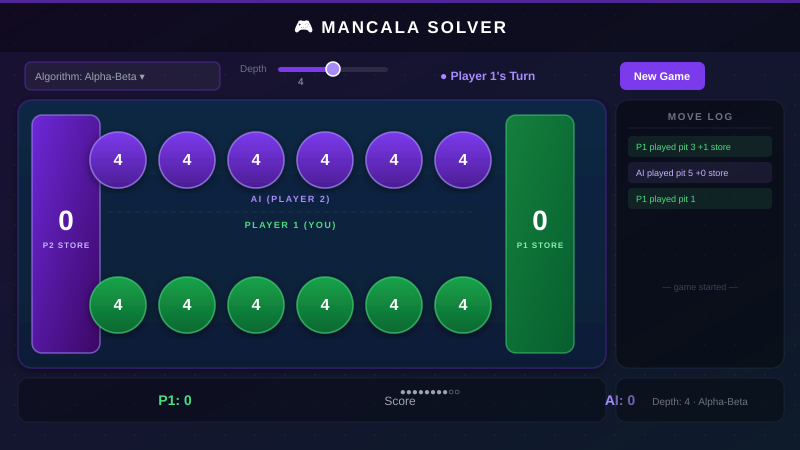
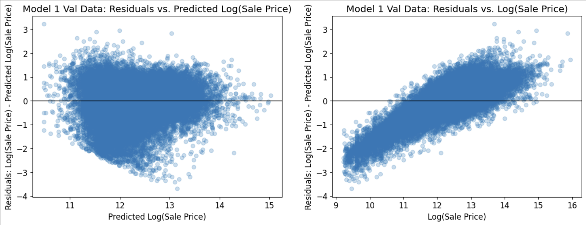
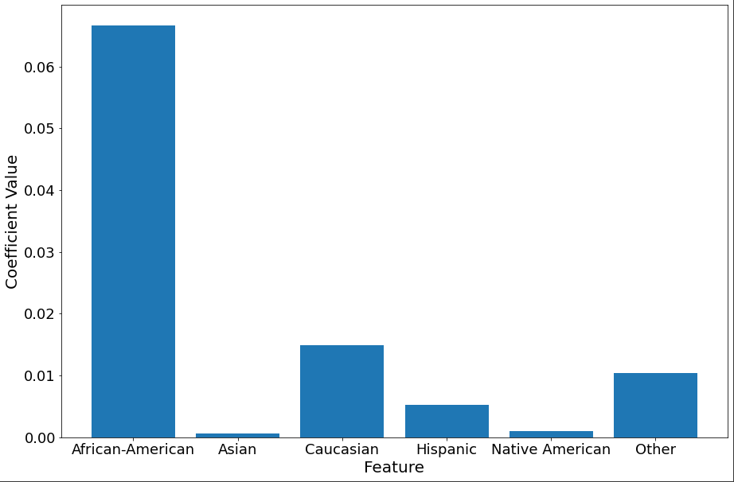

Hi, I'm
Kyle Okura
Computer Science Student & Aspiring Data Scientist
A Computer Science student at the University of Colorado Boulder with a minor in Business. I'm passionate about data science, machine learning, and turning raw data into meaningful insights. With experience in Python, SQL, HTML, CSS, C, and C++, I enjoy building projects that tackle real-world problems.
Projects
A selection of projects I've built, ranging from AI and machine learning to data analysis and web development.

Credit Card Fraud Detection
Trained a Multi-Layer Perceptron (MLP) on 284,807 real-world credit card transactions to classify fraud. Tackled extreme class imbalance using stratified splitting, weighted loss functions, and threshold tuning, achieving a 0.9789 ROC-AUC and 0.82 Fraud F1-score.
View on GitHub
Mancala AI Solver
Built an AI agent to play the Kalaha variant of Mancala using Minimax and Alpha-Beta Pruning. Served via a Flask web interface with a CLI benchmark mode. Alpha-Beta achieved a 75–85% win rate against a random opponent across multiple search depths.
View on GitHub
Predictive Modeling on Housing Dataset
Built a machine learning pipeline to predict residential property sale prices across Cook County, IL using 500,000+ records and 62 features. Performed feature engineering, linear regression modeling, and fairness analysis to surface property tax assessment inequities.
View on GitHub
Examining Judicial Racial Bias
Analyzed racial bias in the COMPAS recidivism prediction tool used in criminal justice. Trained a logistic regression model on COMPAS data and examined learned coefficients to assess whether demographic features drove disproportionate risk score predictions.
View on GitHub